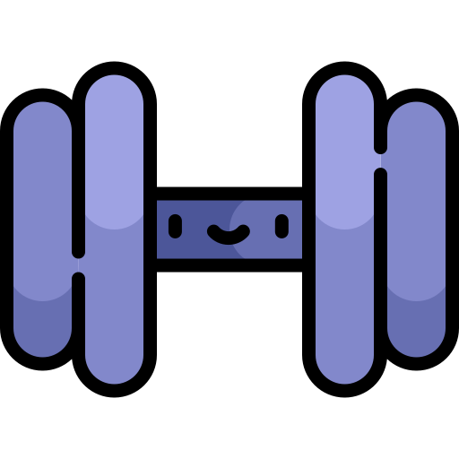

The basics of going to the gym are to keep your workouts simple, consistent, and focused on the main movements such as pushing, pulling, legs, and core exercises. Beginners should aim to train a few times per week using a small number of exercises, performing controlled repetitions rather than rushing. Safety is very important, so you should always start with light weights, warm up before training, and avoid lifting weights that are too heavy. Good form is essential to prevent injury and get the best results; this means keeping your back straight, moving the weight in a slow and controlled way, and using a full range of motion. Breathing properly also helps, by exhaling during effort and inhaling when lowering the weight. It is important not to rush progress or compare yourself to others, as lifting too heavy too soon can lead to injury. Overall, focusing on correct technique, staying consistent, and gradually increasing difficulty over time will help you improve safely and effectively in the gym.